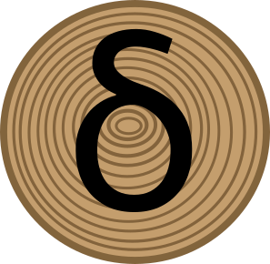
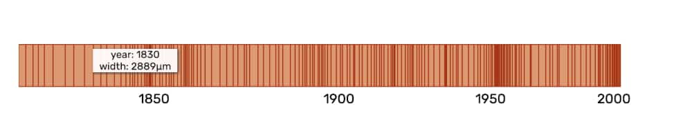
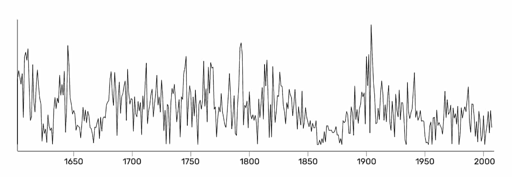

dendros.io
dendros is a tool to visually explore and review rwl tree ring data in your web browser.
User Interface
Core viewer
A recreation of a core sample for viewing relative ring widths across the sample
Time series
Tucson rwl
Data
Data uploaded to the application is stored locally in the browser. Uploaded data is not sent or stored to any server.
Open Source
The source code for this tool is open source under an MIT license. Contributions